See Awl. Term used in northern counties and/Scotland [Salaman]
In medieval Latin, Subula.
The awls in this firsttwo pictures are based on illustrations. The first and third appear in varying forms in Das Hausbuch der Mendelschen, (Stadtbibliothek N�rnberg). The Second is from an altarpiece from Fribourg, "Two scenes with Saints Crispinus and Crispinianus" - by the Bernese Master of the Pinks ("of the Carnations") (1500-1510) (Schweizerisches Landesmuseum, Zurich).

This is from "Life of St. Mark", 14th century. (Manresa Cathedral, Spain):
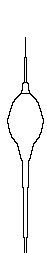
The remaining line up show several awls from archaeological contexts. The first three are from the Museum of London, although I don't have the excavation information. The next two are from Greenland -- Sandnes S.167 (metal awl - D11709 7.6 long. In House I) c.1350 Western Settlement and Sandnes S.168 (metal awl - D11710 8 Long (blade is 4.4), Collar. In Stable 5V) c.1350 Western Settlement. The next two are from Poland.
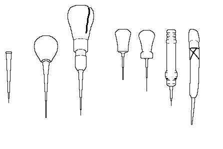
Reproduction based based on Sandnes S.168 (metal awl - D11710 8 Long (blade is 4.4), Collar. In Stable 5V) c.1350 Western Settlement (by Tim Yoder of Tulsa, Oklahoma):
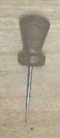
Other interpretations:
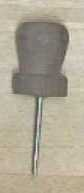
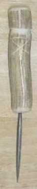
Sheepskin tanned in oak or larch bark, as distinguished from Roan, which is tanned in sumach. Sometimes passed off as "cordovan", or Cordwain. [c.1300 Basen, Baseyn, Bazan, Bezan - from Old French Bazenne, Basanne. By 1714 Basan,
For Inking? [Lystyne lordys verament]
? [Lystyne lordys verament]
Shoemaker's Blacking. In Latin, Atramentum [Promptorium Parvalorum]
A group of shoemakers [MED]
blacking pan ??? [Lystyne lordys verament]
nallys Nails/Tacks or blacking under nails? [Lystyne lordys verament]
thombys blak black thumbs from code or blacking? [Lystyne lordys verament]
- Coperas water
- A solution of iron sulfate, which, when used on tanned leather, turns it black. [Martin, 1745]. This may be the liquid made from iron filings and vinegar referred to by some as "Iron Black".
- Copperas, aka vitriola [c1440], coperose [c1440], fraganti [c1450], coperas [c1450], vitriol [c1450] chalcanthum [c1565]. green copperas, green vitriol, Iron Sulphate (FeSO4).
- Iron Black
A solution of iron filings and vinegar, which, when used on tanned leather, turns it black. [Saguto]. May be the same as Coperas water.
See Awl. [Promptorium Parvalorum]
According to tradition, Hog's bristles (aka Sow-hair, Boar's bristle) became used in the shoemaking industry because of their flexibility in pulling the thread through curved holes. It is not known when they became common, but they were at least in use by the 14th century (when they appear in a Shoemaker's will). Other needles may have also been used, however.
[Lystyne lordys verament]
The Carving Knife is used to trim away excess leather, particularly in places where the round knife would be difficult to handle or manage. The most important aspect though is that this knife must be sharp.
The following knives appear in illustrations. The first three appear in in Das Hausbuch der Mendelschen, (Stadtbibliothek N�rnberg). The Fourth is from "Life of St. Mark", 14th century. (Manresa Cathedral, Spain)
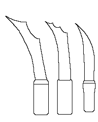
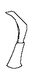
The next two knives appear in archaeological contexts. The first one is from the the Museum of London, and the second is from Stockholm, as shown in Dahlb�ck, G�ran (ed). Helgeandsholmen, 1000 �r i Stockholms str�m. Stockholm: Stockholmsmonografier utgivna av Stockholms kommun LiberF�rlag, 1983.

See Chaucepe [Lystyne lordys verament]
In Latin, Subtaleris, in Modern French, "Chausse-Pied".. The term is usually glossed as 'shoe horn', by the 18th century, the term referred to a strip of hair-on cow skin that was used to help put on a shoe [Saguto; Lystyne lordys verament]
See Chaucepe [Promptorium Parvalorum]
- From the Old English Clut "a rag, tatter or shred used as a patch or for repairs" Used for leather pieces (i.e. Lederclout, clout leder) from at least c.1300. Used for shoes from at least 1450 [OED, MED]
- See Cobbler. Thomas Wright, in his commentary on John of Garland, Dictionarius, refers to Pictacia and Tacons.
- To nail (i.e. hobnailed or nailed repairs).
- sb. Obs. Also Coode. Pitch, cobbler's wax.
1358 Ord. in Riley London Mem (1868) Code, rosin,, or other manner of refuse.
c1440 Wycliffe Ex. ii 3 (MS. Bodl. 277) She took a segge leep, and clemede it with coode
[1382 glewishe cley 1388 tar]
c1440 Promp. Parv. 85 Code, Sowters wex [H.P. coode]
c.1485 Digby Myst. (1882) ii, 103 Be-paynted with sowter's code.[OED 2d Ed.].
- Someone who makes or fastens cord to a shoe. Term is used from c.1430 on [OED 2d Ed.]
- Someone who forms a cord, welt, or braid on a shoe. Term is used from 1885 on [OED 2d Ed.].
- See Cordwain.
- By the middle 18th century, this term refers to equine leather/tanned horsehide, used for shoe uppers and boot legs. This is a totally different leather from that referred to as medieval "Cordwain" (although "Cordovan" is a medieval term for Cordwain). [Vass says modern Cordovan is chrome tanned, although Saguto says it's veg-tanned.]
Cordwain leather was traditionally a particularly rich red-dyed alum-tawed leather from the Mouflon sheep or goat, from Cordoba in Spain. Later it was made from dyed, vegetable tanned cowskin. [Grew/deNeergaard, 1988] The term "cordovan" first appears in English before 1625 [OED 2d Ed.]. Thomas Wright, in his commentary on John of Garland, Dictionarius, may be referring to this when he uses the term Alluta.
- The art of craft of the Cordwainer (from at least 1831) [OED 2d Ed.].
- The region of London south of St. Mary-Le-Bow where the Cordwainers worked. 13th Century. Also Corveiseria. [Canterbury Register K p.1]
The art of craft of the Cordwainer [Martin, 1745][OED 2d Ed.].
See Awl. Term used in northern counties and/Scotland [Salaman]
See Awl. Specifically a shoemaker's awl [Promptorium Parvalorum]
Footing Block (Footynge Block, Heel Block)
- A small block placed under the heel of the shoemaker using a Stirrup. This elevates the leg slightly, and helps the tension of the stirrup. [Saguto]
- There is some supposition that since the term "heel block" appears before the common (Deloney (1599)) appearance of heels, the use of the term "Heel block" might refer to a footing block.
Possibly refers to Dubbin [Lystyne lordys verament]
A generally foot-shaped form. For the discussion on the medieveal uses and development of the last, see that page. Several medieval lasts appear in the artwork with what appear to be wooden shovers, and are being used as display trees.
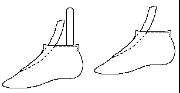
Shoe thread
In Britain, during the Early Middle Ages (aka the "Dark Ages"), thread was often made from animal fibers such as sinew, gut or or wool thread, while on the Continent appears to have remained the most comon form of thread.. After 1000, or so, these are replaced by linen thread. Thread is usually wound around a spindle, or in a ball held in a covered cup and drawn through a hole in the lid.
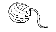
- From L. Lingula - Shoemaker's thread. Related to Layner/Lanear leather thong which also derives from Lingula.
- From the Scots (Lingle) and French (Ligneul, Lignoul), a shoemaker's sewing thread, waxed and bristled (See Waxed End) [Saguto]
Nneedles may have been used.
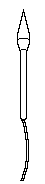
[Das Hausbuch der Mendelschen, (Stadtbibliothek N�rnberg).]May refer to a cutting board, or Paring Horn [Lystyne lordys verament]
See Shears ["Life of St. Mark", 14th century. (Manresa Cathedral, Spain)]
This is a somewhat half-round clump of wood which is held to the left leg by the Stirrup. It is used for sewing closing seams when a last is not appropriate.

Shears
A large pair of scissors, made from a single strip of metal, used for cutting thread and leather. There is some disagreement about whether you should ever use scissors or shears to cut leather as it does not cut evenly, but obviously this is a modern debate. Shears also appear in the Medieval artwork as well.
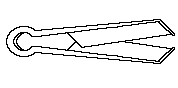
I haven't the slightest idea other than it appears in a line along with "King Colting's orgone" in [Lystyne lordys verament]
Stirrup (Stirrup Strap)
A long strip of leather that wraps around the knee and held in place by the foot, often with a Heel Block to help control the pressure, used as a form of stiching pony, or clamp to hold the work steady while you stitch. The stirrup may be split at the top so that it holds the leather in place while a flat seam is sewn. A Scots term for stirrup was Cashel.
see Awl.
May refer to Dubbin [Lystyne lordys verament]
See Waxed End [Promptorium Parvulorum]
(See Trenket) [Lystyne lordys verament]
The term derives from the Old French, Trechet, and the old French (Picard) Trenquet. In the Middle Ages, this term likely referred to the medieval "Shoemaker's Knife" currently known as a Round Knife (qv). The reason I say this is because, as may be seen in the quotes below, this is the knife that is emblematic of the shoemaker. This knife appears in virtually all pictures of medieval shoemakers, and is heraldically the shoemaker's knife. It should not be confused with the modern "Tranchet".
- between 1218-1229 Ansorium � "Cobbler�s shaping knife" p.125 "Alutarrii secand cum rasorio vel ansorio [gl: cultrum ipsius sutorius] corium �" [John de Garland Dictionarius; OLD]
- c1340 Trenket et subiloun "Shappyngknyf and al" (Shaping Knife and Awl) [Nominale (Skeat) 553, OED]
- 14-- Ansorium, a "shavyngknyf, or a trenket". [Voc. in Wr.-W�lcker 564/18 , OED, OLD]
- c1440 Schapynge knyfe, scalprum. "Schapynge knyfe of sowtarys, ansorium". [Promptorium Parvulorum. 444/1, OED, OLD]
- c1440 Trenket (Win: Trenkette), sowtarys knyfe, anxorium.(add: Axorium, KC: Anxorium) [Promptorium Parvulorum 502/1, OED, OLD, MED]
- a1450 "a trynget of Cordwainers; a bleche of souters" [terms assoc (1)(Rwl) 604:, MED]
- c1450 Ansorium: "a schaving knyfe or a trenket" [Trin-C.LEDict 564/19, MED]
- a1475 "The hare come with a long goude, drywyng the harrous; there come trynkettus and tournyng stones and elson blades, colrakus, and copstolus one gret whyle-barrous." [Herken to my tale p.86, MED]
- 1483 A Trenket, ansorium . [Cath. Angl. 392/1, OED, OLD, MED]
- 1486 A Trynket of Corueseris (= Shoemakers) [Boke of St. Albans fvij, OED, MED]
- c1500 "He bequeythed to his sone Hyk Hys tranket and hys turning styk" [Lysting Lordys Verement, MED]
- 1530 "Trenket an instrument for a cord wayner batton atorner ma." [Palsgrave, EMEDD]
- 1530 "Trynket a cordwayners toole baton a tourner soulies s ma. ." [Palsgrave, OED, EMEDD]
- 1535 "How cal thay ou, sir, with the schaiping knife? Ane sowtar, sir" [LYNDESAY Satyre 3139, OED]
- 1547 "Tranket kyllell krydd" [SALESBURY Welsh Dict., OED]
- 1611 "Trenchet de cordo�annier. [A Shoomakers cutting knife.] ." [Cotgrave, OED, EMEDD]
- 1611 "Tranchet d'un Cordo�annier. [A Shoomakers paring, or cutting knife.] ." [Cotgrave, EMEDD]
- This is shown in Das Hausbuch der Mendelschen in this variety of fashions:
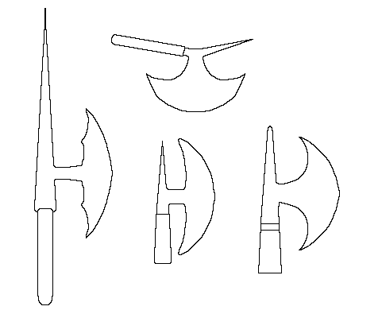
- Salaman displays it like this:
 .
. - The Museum of London has in their display cases:
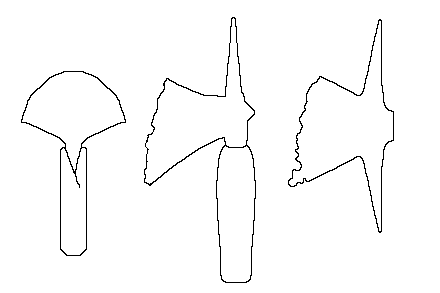
Unfortunately I didn't get their information regarding where and how these were excavated. From these, the following reproduction was made for me by Greenman Forge.
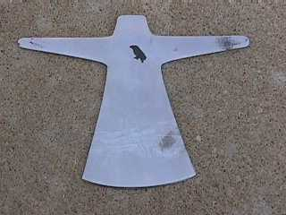
- This example, is from Stockholm, as shown in Dahlb�ck, G�ran (ed). Helgeandsholmen,
1000 �r i Stockholms str�m. Stockholm: Stockholmsmonografier utgivna av Stockholms
kommun LiberF�rlag, 1983.
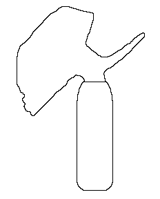
- Srtryk ur Uppgr�vt f�r PKbanken i Lund. shows other Scandinavian examples
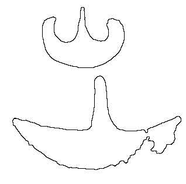
{kind=link}
{kind=link}
{kind=link}
{kind=link}